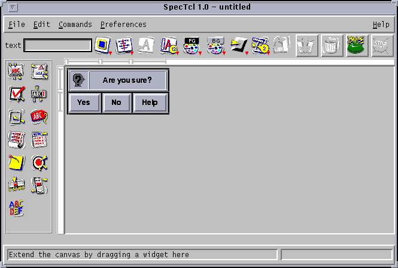
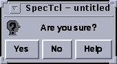

,
,  ,
and
,
and  . In addition, it will have labels that contains
both text and an image. The final product should look like this in
SpecTcl:
. In addition, it will have labels that contains
both text and an image. The final product should look like this in
SpecTcl:

and when run in test mode, it will look something like this:
It might be useful to follow along with the tutorial.